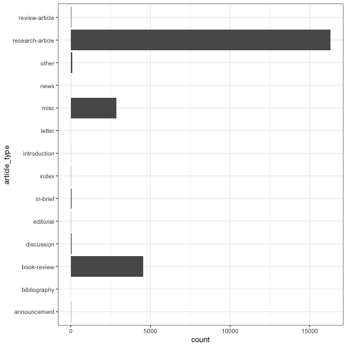
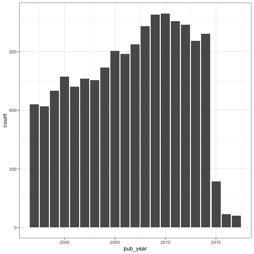
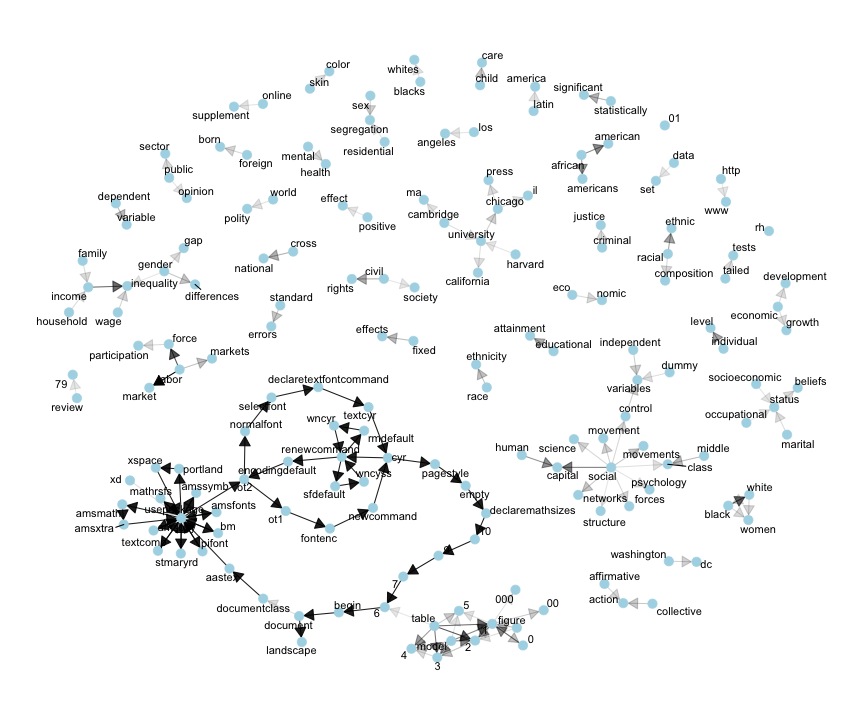
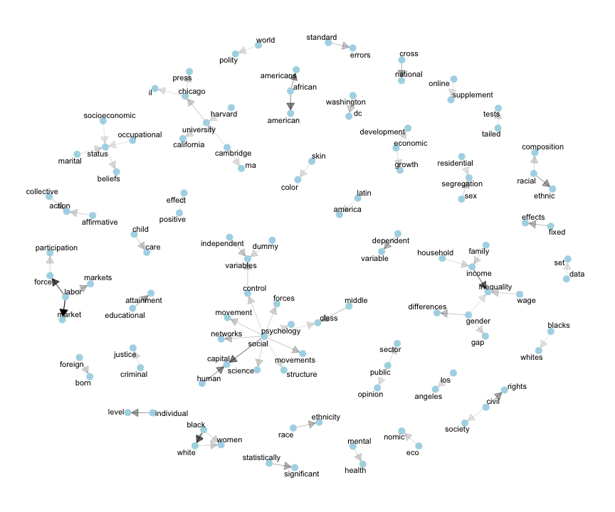
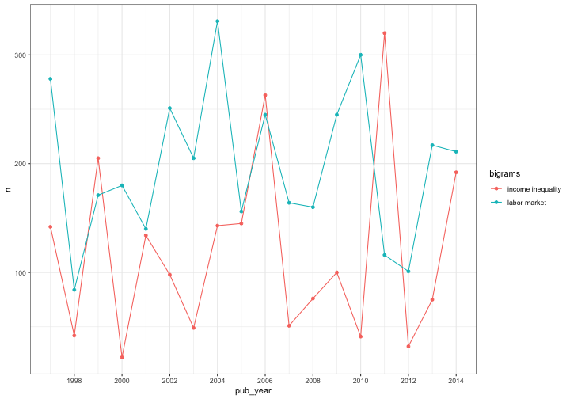

Analysing n-grams with jstor for R
Thomas Klebel
2019-12-22
Source:vignettes/analysing-n-grams.Rmd
analysing-n-grams.RmdThe service DfR by JSTOR offers several ways for text analysis of scientific articles. In this vignette I will demonstrate how to analyse n-grams which DfR delivers.
Let’s suppose, we are interested in the topic of “inequality” within the discipline of sociology. Social inequality can be considered a prime subject of sociological inquiry. In order to gain some context on the subject, we might be interested to analyse frequently occurring terms. DfR offers different grades of tokenization: n-grams for 1-3 words, e.g. unigrams, bigrams and trigrams. In case you are unfamiliar with the analysis of tokenized text, you could read the first few paragraphs of chapters 1 and 4 in https://www.tidytextmining.com as an introduction.
Our analysis starts at the main page of DfR. We create a dataset1 by searching for “inequality” and selecting “sociology” as our subject. To trim down the number of articles, we only select articles from 1997 to 2017. After logging in/creating an account, we select unigrams and bigrams. The resulting .zip-file can be downloaded from the email which DfR sends.
Up-front, we need to load some packages. jstor is available from CRAN, so it can be installed via install.packages("jstor").
library(jstor)
library(tidyverse)
library(future)
# set a lighter theme for plots
theme_set(theme_bw())
# import files in parallel
plan(multisession)With the latest version of jstor we can now directly import files from a zip archive. We only need to specify, where the zip archive is located, which parts we want to extract, and where the resulting files should be saved.
Before importing data, we can take a quick look at the contents of each archive with jst_preview_zip():
jst_preview_zip("part1.zip")
## # A tibble: 4 x 3
## type meta_type n
## <chr> <chr> <int>
## 1 metadata journal_article 19782
## 2 ngram1 ngram1 19759
## 3 ngram2 ngram2 19739
## 4 ngram3 ngram3 19727
jst_preview_zip("part2.zip")
## # A tibble: 4 x 3
## type meta_type n
## <chr> <chr> <int>
## 1 metadata journal_article 4127
## 2 ngram1 ngram1 4151
## 3 ngram2 ngram2 4172
## 4 ngram3 ngram3 4184Although we could import all ngrams at this point, this would be extremely inefficient. It is thus best first to decide, which articles we want to analyze, and import the corresponding ngram-files afterwards.
The following code assumes that you follow a workflow organised around projects within RStudio (refer to http://r4ds.had.co.nz/workflow-projects.html for further information).
import_spec <- jst_define_import(article = jst_get_article)
jst_import_zip("part1.zip", import_spec = import_spec, out_file = "part1")
jst_import_zip("part2.zip", import_spec = import_spec, out_file = "part2")
#> Processing files for journal_article with functions jst_get_article
#> Processing chunk 1/1
#> Progress: ───────────────────────────────────────────────────────────── 100%Since jst_import_zip writes the results to disk, we need to read the metadata from the newly created file. This is made easy by jst_re_import which ensures, that the data are read with the right column types.
imported_metadata <- c("part1_journal_article_jst_get_article-1.csv",
"part2_journal_article_jst_get_article-1.csv") %>%
map_df(jst_re_import)
imported_metadata## # A tibble: 23,909 x 19
## file_name journal_doi journal_jcode journal_pub_id journal_title
## <chr> <chr> <chr> <chr> <chr>
## 1 journal-… <NA> <NA> amerjsoci American Jou…
## 2 journal-… <NA> <NA> amerjsoci American Jou…
## 3 journal-… <NA> <NA> amerjsoci American Jou…
## 4 journal-… <NA> <NA> amerjsoci American Jou…
## 5 journal-… <NA> <NA> amerjsoci American Jou…
## 6 journal-… <NA> <NA> amerjsoci American Jou…
## 7 journal-… <NA> <NA> amerjsoci American Jou…
## 8 journal-… <NA> <NA> amerjsoci American Jou…
## 9 journal-… <NA> <NA> amerjsoci American Jou…
## 10 journal-… <NA> <NA> amerjsoci American Jou…
## # … with 23,899 more rows, and 14 more variables: article_doi <chr>,
## # article_pub_id <chr>, article_jcode <chr>, article_type <chr>,
## # article_title <chr>, volume <chr>, issue <chr>, language <chr>,
## # pub_day <chr>, pub_month <chr>, pub_year <int>, first_page <chr>,
## # last_page <chr>, page_range <chr>Cleaning the data
Data from DfR is inherently messy. To fix a few common issues, we can use jst_augment():
imported_metadata <- jst_augment(imported_metadata, quietly = TRUE)For more information on common quirks with data from DfR and how to deal with them, take a look at the vignette("known-quirks").
Exploration
Before diving into the analysis of n-grams, we might wish to take an exploratory look at our metadata. The first thing to look at are the types of articles.
ggplot(imported_metadata, aes(article_type)) +
geom_bar() +
coord_flip()
plot of chunk article-types
We can see, that the majority of articles are proper “research-articles”, which together with book-reviews and miscellaneous articles amount to ~99% of all articles.
## # A tibble: 14 x 3
## article_type n perc
## <chr> <int> <chr>
## 1 research-article 16289 68.1%
## 2 book-review 4552 19.0%
## 3 misc 2850 11.9%
## 4 other 89 0.4%
## 5 in-brief 38 0.2%
## 6 discussion 31 0.1%
## 7 review-article 25 0.1%
## 8 announcement 12 0.1%
## 9 index 9 0.0%
## 10 editorial 7 0.0%
## 11 introduction 3 0.0%
## 12 news 2 0.0%
## 13 bibliography 1 0.0%
## 14 letter 1 0.0%We must be cautious, however, when using this variable to distinguish articles into categories. In this instance, we have “research-articles” which are actually book-reviews:
imported_metadata %>%
filter(article_type == "research-article" & str_detect(article_title, "Book")) %>%
select(file_name, article_title, pub_year)## # A tibble: 190 x 3
## file_name article_title pub_year
## <chr> <chr> <int>
## 1 journal-article-10.1086_210272 Book Reviews 1999
## 2 journal-article-10.1086_210273 Book Reviews 1999
## 3 journal-article-10.1086_210274 Book Reviews 1999
## 4 journal-article-10.1086_210275 Book Reviews 1999
## 5 journal-article-10.1086_210276 Book Reviews 1999
## 6 journal-article-10.1086_210278 Book Reviews 1999
## 7 journal-article-10.1086_210279 Book Reviews 1999
## 8 journal-article-10.1086_210280 Book Reviews 1999
## 9 journal-article-10.1086_210281 Book Reviews 1999
## 10 journal-article-10.1086_210283 Book Reviews 1999
## # … with 180 more rowsFor the current demonstration, we want to restrict the type of articles to research articles, therefore we need to take steps to remove book reviews and other miscellaneous articles: First, filter by article_type, then remove articles where the title starts with “Book Review”.
research_articles <- imported_metadata %>%
filter(article_type == "research-article") %>%
filter(!str_detect(article_title, "^Book Review"))The moving wall - filtering articles by time
Since JSTOR has a moving wall, we should take a look at the number of articles per year in our dataset.
research_articles %>%
ggplot(aes(pub_year)) +
geom_bar() 
plot of chunk publications-per-year
From this graph we can see an increase in research articles until 2010, after which the number of articles first tapers off, and then drops off sharply. For this reason we should exclude articles at least from 2015 onward, since the sample might get quite biased toward specific journals.
without_wall <- research_articles %>%
filter(pub_year < 2015)Flagship journals - filtering articles by journal
Since the amount of articles is still rather large for this demonstration, we could select only a few journals. Here, we will look at articles from two leading journals within the discipline, “American Journal of Sociology” and “American Sociological Review”.
Since we cleaned the identifiers for journals with jst_augment earlier, we can select our two flagship-journals very easily.
Importing bigrams
Disclaimer: Much of the following analysis was inspired by the book “Text Mining with R” by Julia Silge and David Robinson: https://www.tidytextmining.com
For this demonstration we will look at bigrams to find the most common pairs of words. Until now, we were only dealing with the metadata, therefore we need a way to link our reduced dataset to the bigram files from DfR. The directory structure for deliveries from DfR looks something like this:
receipt-id-123456-part-001
-- metadata
-- journal_article_foo.xml
.
.
.
-- ngram2
-- journal_article_foo.txt
.
.
.
receipt-id-123456-part-002
-- metadata
-- journal_article_bar.xml
.
.
.
-- ngram2
-- journal_article_bar.txt
.
.
.From this structure we can see, that the file name can serve as an identifier to match articles and n-grams, since it is similar between metadata and n-grams.
To make importing a subset of ngrams more convenient, we can use jst_subset_ngrams. This function returns a list of “zip-locations”, which jst_get_ngram can read.
ngram_selection <- jst_subset_ngrams(c("part1.zip", "part2.zip"), "ngram2",
flagship_journals)## Error in utils::unzip(zip_archive, list = TRUE): zip Datei 'part2.zip' kann nicht geöffnet werden
head(ngram_selection, 2)## Error in head(ngram_selection, 2): Objekt 'ngram_selection' nicht gefunden
ngram_selection <- jst_subset_ngrams(c("part1.zip", "part2.zip"), "ngram2",
flagship_journals)
imported_bigrams <- ngram_selection %>%
furrr::future_map_dfr(jst_get_ngram)From the 872 articles in our two flagship journals we now have 6,729,813 bigrams. The bigrams are calculated by JSTOR for each article independently. In order to reduce the sample to the most common bigrams, we have two choices: either to include only terms which occur within each article a given amount of times, or to include terms which occur within all articles a given amount of times. By only including terms which occur more than 5 times in each article, we can drastically reduce the number of terms. However, we might miss some important ones: there might be terms which do not occur repeatedly within articles, but are present in all of them.
For demonstration purposes we are a bit restrictive and include only those terms, which occur at least three times per article.
top_bigrams <- imported_bigrams %>%
filter(n >= 3)Cleaning up bigrams
When constructing n-grams, DfR uses a stop-word list, which is quite limited 2. If we would like to restrict the terms a bit further, we could use stopwords from tidytext:
library(tidytext)
bigrams_separated <- top_bigrams %>%
separate(bigrams, c("word1", "word2"), sep = " ")
bigrams_filtered <- bigrams_separated %>%
filter(!word1 %in% stop_words$word) %>%
filter(!word2 %in% stop_words$word)After removing the stopwords we need to consider the fact, that our bigrams were created for each article on its own. In order to analyse them together, we need to count the terms for all articles in combination.
bigram_counts <- bigrams_filtered %>%
group_by(word1, word2) %>%
summarise(n = sum(n)) %>%
arrange(desc(n))
bigram_counts## # A tibble: 106,706 x 3
## # Groups: word1 [18,152]
## word1 word2 n
## <chr> <chr> <int>
## 1 american sociological 9593
## 2 sociological review 9198
## 3 university press 4603
## 4 labor market 3555
## 5 american journal 3273
## 6 9 7 3270
## 7 7 6 3260
## 8 10 9 3230
## 9 amsmath amsxtra 3192
## 10 begin document 3192
## # … with 106,696 more rowsFrom the first few terms we can see, that there are still many terms which are not very interesting for our analysis. The terms “american” and “sociological” are simply part of the title of a journal we selected (American Sociological Review). To clean the terms up, we can employ different approaches. One is to simply filter the terms we wish to exclude:
bigram_counts_clean <- bigram_counts %>%
unite(bigram, word1, word2, sep = " ") %>%
filter(!bigram %in% c("american sociological", "sociological review",
"university press", "american journal",
"journal sociology")) %>%
separate(bigram, c("word1", "word2"))We will look at another approach after plotting our bigrams.
Visualize relationships
When analyzing bigrams, we might want to look at the relationships between common terms. For this we can leverage the power of igraph and ggraph.
First, we only keep the most common terms and then convert our data.frame to an igraph-object. 3
bigram_graph <- bigram_counts_clean %>%
filter(n > 500) %>%
graph_from_data_frame()
bigram_graph## IGRAPH 755e99b DN-- 170 161 --
## + attr: name (v/c), n (e/n)
## + edges from 755e99b (vertex names):
## [1] labor ->market 9 ->7
## [3] 7 ->6 10 ->9
## [5] amsmath ->amsxtra begin ->document
## [7] declaremathsizes ->10 declaretextfontcommand->textcyr
## [9] documentclass ->aastex encodingdefault ->ot2
## [11] newcommand ->cyr ot1 ->fontenc
## [13] ot2 ->ot1 pagestyle ->empty
## [15] portland ->xspace
## + ... omitted several edgesFor plotting, we will use a simple plotting function, adapted from https://www.tidytextmining.com/ngrams.html#visualizing-a-network-of-bigrams-with-ggraph.
plot_bigrams <- function(igraph_df, seed = 2016) {
set.seed(seed)
a <- grid::arrow(type = "closed", length = unit(.15, "inches"))
ggraph(igraph_df, layout = "fr") +
geom_edge_link(aes(edge_alpha = n), show.legend = FALSE,
arrow = a, end_cap = circle(.07, 'inches')) +
geom_node_point(color = "lightblue", size = 4) +
geom_node_text(aes(label = name), repel = T) +
theme_graph()
}
plot_bigrams(bigram_graph)
Very obvious is a group of nodes which are not relevant to the topic of inequality. They come from LaTeX documents and somehow made their way into the original dataset. However, since they are more common than most of the other terms, they are quite easy to remove. We can look at the nodes/vertices of our graph withV(bigram_graph).
V(bigram_graph)## + 170/170 vertices, named, from 755e99b:
## [1] labor 9 7
## [4] 10 amsmath begin
## [7] declaremathsizes declaretextfontcommand documentclass
## [10] encodingdefault newcommand ot1
## [13] ot2 pagestyle portland
## [16] renewcommand rmdefault sfdefault
## [19] textcyr usepackage 6
## [22] aastex amsbsy amsfonts
## [25] amssymb amsxtra bm
## [28] cyr document empty
## + ... omitted several verticesThe first node, “labor”, is relevant to us, but all other nodes from 2 to at least 40 are clearly irrelevant. We can remove them by simple subtraction:
bigram_graph_clean <- bigram_graph - 2:40
bigram_graph_clean## IGRAPH 3272619 DN-- 131 105 --
## + attr: name (v/c), n (e/n)
## + edges from 3272619 (vertex names):
## [1] labor ->market labor ->force 0 ->0
## [4] table ->2 1 ->1 income ->inequality
## [7] black ->white table ->1 table ->3
## [10] social ->capital model ->1 model ->2
## [13] african ->american 0 ->1 human ->capital
## [16] african ->americans table ->4 1 ->2
## [19] model ->3 racial ->ethnic individual->level
## [22] civil ->rights cross ->national
## + ... omitted several edgesAnother apparent group is a combination of “table” or “figure” with digits. This evidently comes from tables or figures in the papers and might suggest, that the articles in our sample quite frequently employ quantitative methods, where figures and tables are very common. For the analysis at hand however, we might remove them, along with a few other irrelevant terms.
bigram_graph_clean <- bigram_graph_clean - c("table", "model",
as.character(0:5),
"xd", "rh", "landscape", "00",
"figure", "review", "79",
"http", "www", "000", "01")After cleaning up a bit, we can take a fresh look at our bigrams.
plot_bigrams(bigram_graph_clean, 234)
plot of chunk second-bigram-graph
The figure is still far from perfect (“eco” -> “nomic” should clearly be one term), but we can begin to analyse our network.
The most frequent bigrams are now “labor market”, “labor force”, and “income inequality”, which are not very surprising given that most individuals in capitalist societies need to supply their work in exchange for income. For this reason, the labor market and its stratification is a prime subject of the sociological inquiry into inequality. A few further key dimensions of sociological analysis are apparent from the graph: gender, race/ethnicity, occupational and socioeconomic status. That we find many terms to be associated with the term “social” seems quite likely given the discipline’s subject.
At least two surprising results should be pointed out. First, it is not evident how the terms “ethnic” and “racial” are connected. They do not form a typical term like “social capital”, “middle class” or similar, nor could they be considered a dichotomy like “black” and “white” which are often included in tables from regressions. From a theoretical point of view, they have slightly different meanings but are frequently being used as synonyms. Second, there is a group of nodes around the term “university”: university -> chicago, university -> california, harvard -> university, etc. At least two explanations seem plausible: either, many books are being cited which are in some way associated with those universities (“The University of Chicago Press” is the largest university press in the United States), or many researchers who publish in the two flagship-journals we selected are affiliated with those four universities: Harvard, Chicago, Cambridge and California. At least partly the prominence of university -> chicago -> press might be due to the fact, that it is the publisher of the American Journal of Sociology, and therefore included in each article by this journal.
Altogether, these findings will not be surprising to well-educated sociologists. Almost all bigrams in the graph are common concepts or terms within the discipline. Most importantly, very often those concepts and terms comprise two single words, as in “social science”, “social structure”, “social networks”. Two approaches might be useful to examine, how these concepts are being used:
- Analyzing trigrams. It could be the case, that many of the above concepts would show up in combination with more interesting terms, if we were to analyze combinations of three words.
- Another approach would be to first analyze data for bigrams as above, determining the core concepts of a field. In a second step, one could search for those core concepts in the raw data files and extract adjacent terms. This would not be possible with the default deliveries from DfR however, since full-text content is only available through a dedicated agreement.
Comparison over time
Besides looking at the overall relationship of bigrams, we could be interested in the development over time of specific terms. Here, we want to look at how often “labor market” and “income inequality” appear from year to year.
For this, we need to join our bigrams with the metadata.
time_bigrams <- top_bigrams %>%
left_join(flagship_journals, by = "file_name") %>%
select(bigrams, n, pub_year)
head(time_bigrams)## bigrams n pub_year
## 1 private sector 92 1998
## 2 market transition 68 1998
## 3 3 t 38 1998
## 4 1 00 37 1998
## 5 journal sociology 34 1998
## 6 state sector 34 1998Again, we need to sum up the counts, but this time grouped by year:
time_bigrams <- time_bigrams %>%
group_by(bigrams, pub_year) %>%
summarise(n = sum(n)) %>%
arrange(desc(n))
time_bigrams## # A tibble: 248,725 x 3
## # Groups: bigrams [157,266]
## bigrams pub_year n
## <chr> <int> <int>
## 1 0 0 2004 1071
## 2 et al 2014 916
## 3 women s 2006 885
## 4 american sociological 2014 860
## 5 sociological review 2014 814
## 6 u s 2014 793
## 7 et al 2011 792
## 8 et al 2013 748
## 9 et al 2010 691
## 10 et al 2012 687
## # … with 248,715 more rowsWe now only keep the two terms of interest and plot them in a simple chart.
# filter the terms of interest
time_comparison <- time_bigrams %>%
filter(bigrams == "labor market" | bigrams == "income inequality")
ggplot(time_comparison, aes(pub_year, n, colour = bigrams)) +
geom_point() +
geom_line() +
scale_x_continuous(breaks = scales::pretty_breaks(7))
plot of chunk bigrams-over-time
In this instance, the plot does not reveal trends over time-the frequency of the terms is fluctuating a lot but staying on a similar level. Single spikes of term frequency for specific years (for example income inequality in 2011) could stem from special issues being explicitly concerned with income inequality, although a quick glance at the corresponding issues invalidates this hypothesis.
An introduction on how to create datasets can be found on the page of DfR: http://www.jstor.org/dfr/about/creating-datasets↩
for more information see the technical specifications on their page↩
If you are unfamiliar with graph theory, just take a look at Wikipedia: Graph Theory.↩